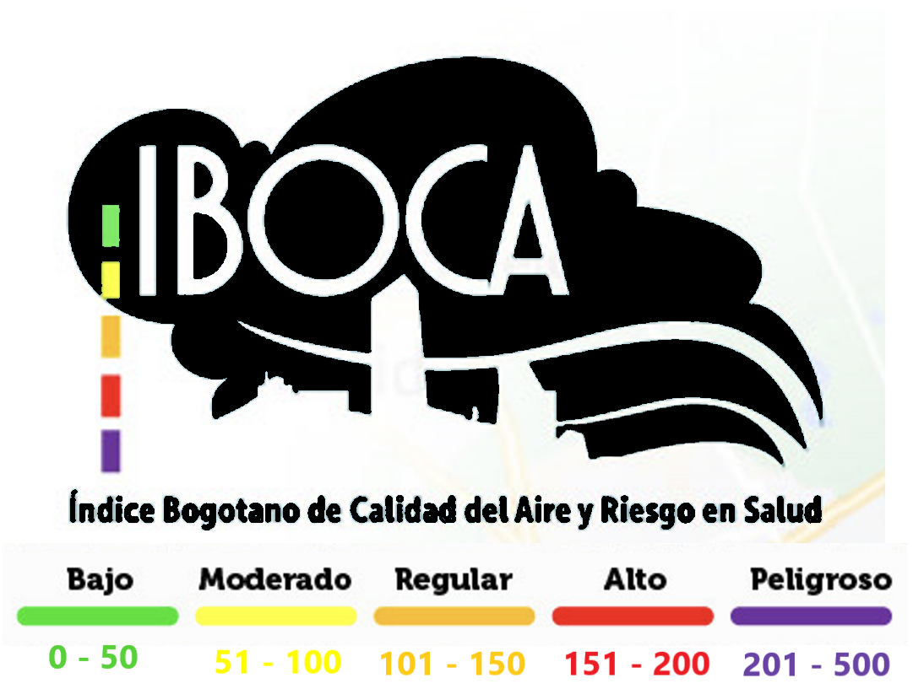

Medición y Monitoreo de la Calidad del Aire 🔎💨
Actualmente, Bogotá cuenta con una Red de Monitoreo de Calidad del Aire (RMCAB) conformada por 20 estaciones ubicadas en diferentes puntos estratégicos de la ciudad, que se encargan de vigilar las concentraciones de contaminantes. A continuación se muestran los datos históricos de la calidad del aire para el año 2022 registrados por la estación de monitoreo Usme. Esta red monitorea el material particulado de diámetro menor a 10 y 2.5 micras (PM10 y PM2.5). Adicionalmente, cuenta con la capacidad de vigilar la concentración de otros contaminantes como el ozono, los dióxidos de azufre y nitrógeno y el monóxido de carbono. En Bogotá se usa el IBOCA para la analizar estos datos.
La Red de Monitoreo de Bogotá es un Sistema de Vigilancia de Calidad del Aire Tipo IV: Avanzado, que cumple con los lineamientos del Ministerio de Ambiente y Desarrollo Sostenible. Además, las estaciones las estaciones y equipos del Sistema de Vigilancia de Calidad del Aire cumplen con los estándares internacionales y aplica los procedimientos para garantizar la veracidad de los datos que se publican en tiempo real en los diferentes sitios web de la entidad.
IBOCA.
El IBOCA (Índice Bogotano de Calidad del Aire y Riesgo en Salud) es una herramienta que comunica de manera sencilla el estado de la calidad del aire en Bogotá, los riesgos para la salud y las acciones necesarias para reducir la exposición a la contaminación.
¿Cómo interpreto el IBOCA? ⬇️
1️⃣ Colores: indican la calidad del aire y el riesgo en salud.
2️⃣ Nivel de riesgo: muestra el peligro para la salud y el ambiente por contaminantes.
3️⃣ Nivel de actuación: define las medidas que deben tomar instituciones y ciudadanía.
4️⃣ Escala adimensional (0 a 500): representa numéricamente los niveles de riesgo.
5️⃣ Intervalos de concentración: expresan los rangos de contaminantes (PM2.5, PM10, O3, NO2, SO2 y CO).
En síntesis, el IBOCA orienta decisiones individuales e institucionales para proteger la salud y el ambiente frente a la contaminación del aire.

Los atributos cuantitativos del IBOCA son intervalos en unidades de concentración de los diferentes contaminantes atmosféricos que corresponden a cada franja de color o riesgo.
Para el cálculo del índice:✳️ PM2.5 y PM10 Material Particulado: medias móviles ponderadas NowCast de 12 horas.
✳️ O3 y CO Ozono y Monóxido de Carbono: medias móviles de 8 horas.
✳️ NO2 y SO2 Dióxido de Nitrógeno y Dióxido de Azufre: valores horarios 1 hora.